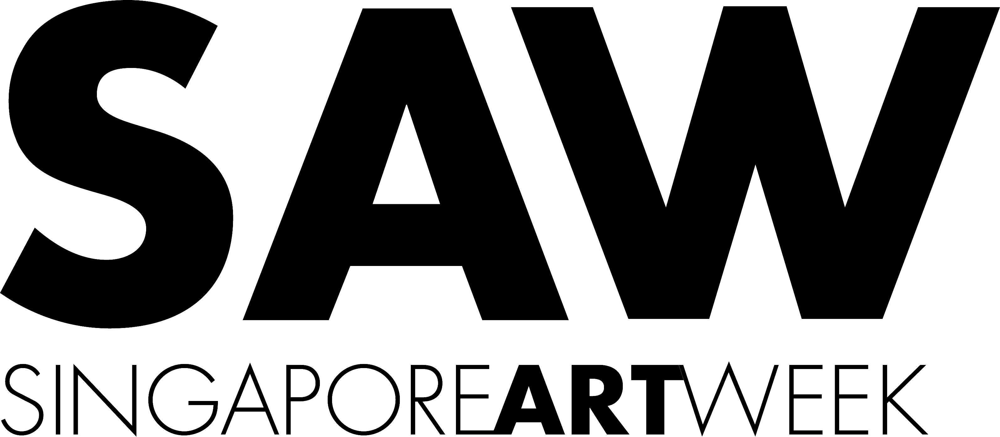
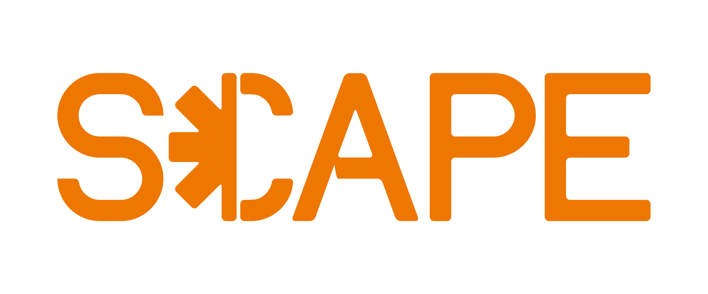
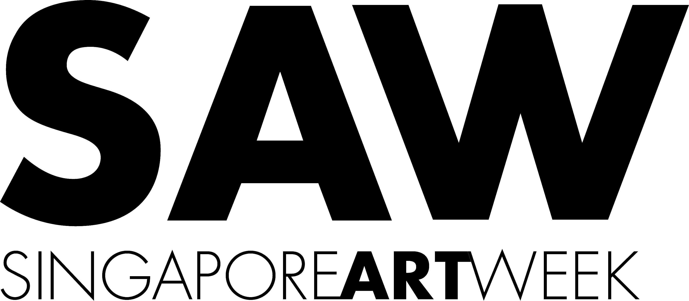
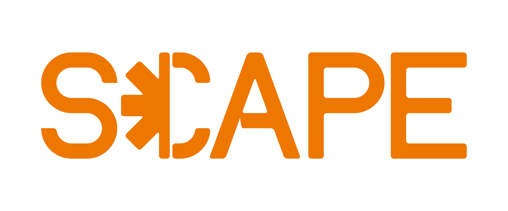

Ground Loops is an exhibition and accompanying series of experimental workshops featuring Singapore and New York-based artists and teachers critically engaged with language, archives, and contemporary technologies. Together, artworks intermingle software, dirt, laughter, and pen on paper to suggest possibilities beyond prevailing digital and social codes. Learners are invited to play close to the metal of the machine in three workshops exploring browser-based sound, digital consent, and speculative ‘bug-lore.’
Ground Loops is co-presented by Feelers and the School for Poetic Computation as part of Singapore Art Week 2026. This programme is supported by the National Arts Council and Potato Productions, and hosted by *SCAPE for COMMA Creative Arts Festival 2026.
 



.png)
Venue: The TreeTop, Level 5, *SCAPE, 2 Orchard Link, Singapore 237978
Group Show: 12pm—7pm, 22—31 Jan
Free and open to the public
Exhibition Tour: 1—2pm, Sun 25 Jan & Sat 31 Jan
Free with registration
Workshops:
Early Bird Tickets – $25 (Book before 3 Jan and enjoy $5 off the regular price of $30)

🎧 The Musical Web: Gestural Instruments w/ Tommy Martinez
2.30–5.30pm, Sat 24 Jan
In this 3 hour workshop students will create interactive browser-based sound works using the p5.sound.js and ml5.js JavaScript libraries. Participants will be introduced to topics in basic synthesis as well as computer vision for motion and skeletal tracking. The class will also cover a brief history of technology as it pertains to the development of new practices in sound art and music. By the end of the workshop students will be able to demonstrate and perform with their own sample-based synthesizer deployed on the web.

🔓 Consensual Hacking w/ Melanie Hoff
2.30–5.30pm, Sun 25 Jan
Consensual Hacking is a collective thought experiment and a guided, participatory workshop focused on digital and relational consent. Through conversation, writing, and hands-on computer access, students will explore what it means to give, withhold, or request consent in digital and romantic spaces.
Students may choose to engage in a consensual process of hacking into each other's personal computers—a practice that raises questions around control, vulnerability, and care. What is social and digital consent and how are they interwoven? What does it mean to responsibly give and take access and control to our most intimate digital or physical spaces? Is there pleasure to be found in a bounded exchange of trust and vulnerability?
Together, we'll navigate secure networking protocols and basic uses of the terminal, while also co-creating sociotechnical contracts that express our boundaries and desires towards a loving, secure, and mutual transgression of digital space.

🪲 Bring Your Own Bug Spray w/ Ashley Hi
2.30–5.30pm, Sat 31 Jan
A bug refers to an unintentional mistake or error in a computer program or hardware system that causes the system to behave unexpectedly in ways it was not designed to. Like a phantom in a machine, a moth caught in a relay, or a cockroach whispering from a telephone, a bug can be a dreadful haunting or a pleasant surprise.
Through a series of speculative writing and coding exercises, participants will contribute to a compendium of bug lore which documents the anxieties around the fear of tech and tech failure through the courage of bug spray.